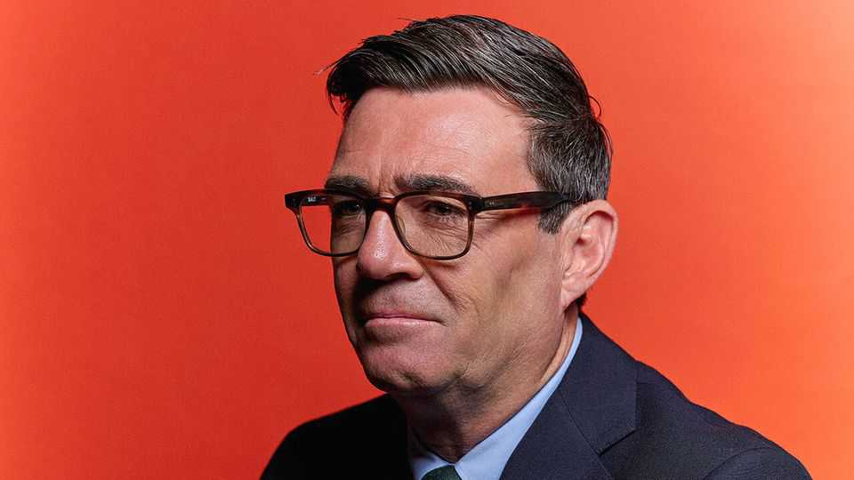

Andy Burnham promises three foreign-policy overhauls
He speaks to The Economist. In Antigua, of all places

Nov 5th 2026
Andy Burnham was a foreign-policy novice when he became Britain’s prime minister in July. His 30-year political career has been occupied almost entirely with domestic affairs, and he has seemed content with that. On being elected the MP for Makerfield in Greater Manchester, he promised to apply a “Makerfield test” to every decision he makes.
Flying to Antigua for the Commonwealth heads of government meeting, known as CHOGM, may not seem an obvious way of delighting his constituents. But the prime minister shows an increased awareness that foreign and domestic policy often come to the same thing. He is taking his Makerfield test global. “That should be our starting point for policy always,” he says.
Mr Burnham treated the summit on November 3rd and 4th as a dry run for what he calls an “autumn of diplomacy”, consisting of five closely packed international shindigs. Speaking to The Economist during his Antigua trip, the prime minister seeks to dispel the impression he has little interest in foreign affairs and insists that Britain can cut a distinctive figure on the world stage. It is the first chance for Mr Burnham to prove he is Britain’s prime minister rather than its mayor.
“Britain is back” after “a difficult decade”, Mr Burnham says. The country commands “unique trust among nations”. At the CHOGM, he claims, other leaders have approached him, saying: “Where have you been? We need you.” He promises “a new relationship” with the Commonwealth, with the Middle East and with the EU, which could mean reversing Brexit.
On coming to office, the prime minister’s recent predecessors all said something similar. Boris Johnson boasted of “global Britain”. Rishi Sunak wanted to undo the reputational catastrophe caused by the premiership of Liz Truss. Sir Keir Starmer even declared: “Britain is back on the world stage.”
Mr Burnham does at least have a clear staging post at which he can test his global ambitions. All his summiteering, he says, is aimed at a successful G20 meeting, to take place in Manchester in November 2027. Working towards “a global set of standards” on artificial intelligence will be “the top issue”, Mr Burnham suggests. He wants to build on the success of Britain’s AI Security Institute to position the country as an honest broker between the tech superpowers of America and China, although he admits it “feels challenging” to forge a framework that both countries could sign up to. “We’ve got to hold out the need to find global agreements on AI,” he says. “If we don’t, the risks of recent times will magnify, they will significantly intensify.”
Not every member of the G20 will be welcome in Manchester. Asked whether Vladimir Putin, the Russian president, will be invited, Mr Burnham answers flatly: “No”. Sanctions on the Kremlin will keep him away, with Russia represented by more junior officials. The prime minister promises to maintain military and financial backing to Ukraine for as long as the country’s war with Russia continues, and is open to committing British troops to a future peacekeeping force if a deal to end the conflict is agreed.
By contrast, Mr Burnham is keen to host Xi Jinping, China’s president, at the get-together. He points out that Mr Xi visited Manchester in 2015, and promises that “he will see a big difference”. The city has developed quickly, thanks in part to Chinese cash. This economic collaboration could be a pattern for future UK-China dealings, the prime minister suggests: “We proceed carefully, but I’m sure there is a real opportunity there.”
Of the three foreign-policy overhauls Mr Burnham promises, the one on Europe remains the most important and the most ambiguous. He says he is open-minded about Britain’s relationship with the EU, but is keen to promote new analysis from the Treasury which concludes that a deal with Brussels on food standards and energy could boost the economy by as much as 0.4% of GDP. This is, he says, “a number that you cannot ignore”. More details should emerge at a summit in Brussels on November 20th; calls within Labour for Britain to rejoin the EU are growing.
His “new approach” to the Middle East, led by the foreign secretary, Ed Miliband, combines a spikier attitude towards Israel with security co-operation with Gulf states such as Saudi Arabia. Mr Burnham says putting sanctions on Israeli settlers was “the right thing to do”, but is open to working more closely with the country’s government if Binyamin Netanyahu is forced out following the inconclusive election in October. On the Commonwealth, the prime minister braved a domestic political backlash by promising to open a “structured dialogue” on the legacy of the British empire which could result in a formal apology for slavery (he has ruled out cash reparations).
Mr Burnham’s trip to Antigua coincided with America’s midterm elections in which Donald Trump’s Republicans were battered. He expresses optimism—not shared by all British politicians—that the scale of the president’s defeat may make him more constructive, for example by pushing him to end the war in Iran so as to ease pressure on oil prices. “What I take from the result and the president’s reaction is that we’ve got an opportunity to refocus around the issue that everyone everywhere is struggling with, and that’s [the] cost of living,” the prime minister says. The result of the midterms could be a harbinger for Britain and other countries, he hints: “The pendulum has swung away from populism in other parts of the world.”
There is no sign of Mr Trump backing down on one of the thorniest issues in the transatlantic relationship. The Chagos Islands host an American naval base. To the president’s chagrin, Sir Keir wanted to hand them to Mauritius. Mr Burnham suggests he is rethinking whether to give up British sovereignty over the archipelago. His government will “recast the arrangement”, he says, citing as a possible precedent the deal between Denmark and America which allows America greater access to Greenland for military purposes.
Alongside Mr Burnham’s diplomatic efforts, he is pulling together a “ten-year plan” which will lay out proposals to move more parts of the economy into “public control” and boost manufacturing employment. This was expected in December, but he now admits it may be delayed until the new year. Rumours in Westminster that the document will be thin are “underestimating the significance” of the plan, the prime minister insists: “I will lay out my very clear vision for Britain.”
But like leaders before him, he has found that he cannot sideline foreign policy completely. “There are so many issues now that you can’t deal with in national borders,” says Jill Rutter of the Institute for Government, a think-tank. The problems of Makerfield will not be solved without keeping an eye on Michigan, Mauritius and Mykolaiv too.■